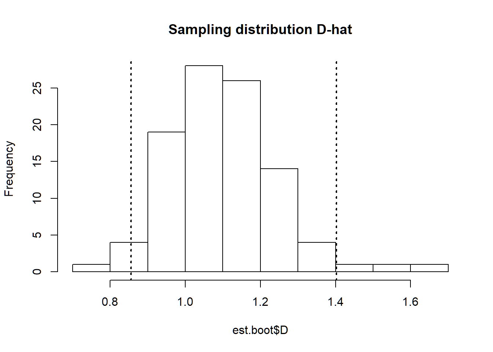

Continuing with the Montrave winter wren line transect data from the line transect vignette, we focus upon producing robust estimates of precision in our point estimates of abundance and density.
The R workspace wren_lt contains detections of winter wrens from the line transect surveys of Buckland (2006).
library(Distance)
data(wren_lt)The function names() allows you to see the names of the columns of the data frame wren_lt. Definitions of those fields were provided in the line transect vignette.
The effort, or transect length has been adjusted to recognise each transect is walked twice.
conversion.factor <- convert_units("meter", "kilometer", "hectare")Rather than refitting models used in the line transect vignette, we move directly to the model selected by Buckland (2006).
wren.unif.cos <- ds(wren_lt, key="unif", adjustment="cos",
convert.units=conversion.factor)Based upon experience in the field, the uniform cosine model was used for inference.
Looking at the density estimates from the uniform cosine model
wren.unif.cos <- ds(wren_lt, key="unif", adjustment="cos",
convert.units=conversion.factor)
wren.unif.cos$dht$individuals$D## Label Estimate se cv lcl ucl df
## 1 Total 1.067167 0.2125562 0.1991781 0.7229706 1.57523 168.1381The coefficient of variation (CV) is 0.20 (20%), and confidence interval bounds are (0.72 - 1.58) birds per hectare. The coefficient of variation is based upon a delta-method approximation of the uncertainty in both the parameters of the detection function and the variability in encounter rates between transects.
\[[CV(\hat{D})]^2 = [CV(\frac{n}{L})]^2 + [CV(P_a)]^2\] where
These confidence interval bounds assume the sampling distribution of \(\hat{D}\) is log-normal (Buckland et al. 2015, Section 6.2.1).
Rather than relying upon the delta-method approximation that assumes independence between uncertainty in the detection function and variability in encounter rate, a bootstrap procedure can be employed. Resampling with replacement of the transects produces replicate samples with which a sampling distribution of \(\hat{D}\) is approximated. From that sampling distribution, the percentile method is used to produce confidence interval bounds respecting the shape of the sampling distribution (Buckland et al. 2015, Section 6.3.1.2).
Before bootstrapping can take place, users must create a function that extracts estimates from each bootstrap replicate. In the function below, a data frame is created containing the density and abundance estimates of individuals for later processing.
DNhat_summarize_indiv <- function(ests, fit) {
return(data.frame(D=ests$individuals$D$Estimate,
N=ests$individuals$N$Estimate))
}After the summary function is defined, the bootstrap procedure can be performed. Arguments here are the name of the fitted object, the object containing the data, conversion factor and number of bootstrap replicates.
est.boot <- bootdht(model=wren.unif.cos, flatfile=wren_lt,
summary_fun=DNhat_summarize_indiv,
convert.units=conversion.factor, nboot=99)The object est.boot contains a data frame with two columns consisting of \(\hat{D}\) and \(\hat{N}\) as specified in the user-defined function DNhat_summarize_indiv. This data frame can be processed to produce a histogram representing the sampling distribution of the estimated parameters as well as the percentile confidence interval bounds.
alpha <- 0.05
quantile(est.boot$D, probs = c(alpha/2, 1-alpha/2))The argument model in bootdht can be a single model as shown above, or it can consist of a list of models. In the later instance, all models in the list are fitted to each bootstrap replicate and model selection based on AIC is performed for each replicate. The consequence is that model uncertainty is incorporated into the resulting estimate of precision.
est.boot.uncert <- bootdht(model=list(wren.hn, wren.hr.poly, wren.unif.cos),
flatfile=wren_lt,
summary_fun=DNhat_summarize_indiv,
convert.units=conversion.factor, nboot=99)
quantile(est.boot.uncert$D, probs = c(alpha/2, 1-alpha/2))Buckland ST (2006) Point transect surveys for songbirds: robust methodologies. The Auk 123:345–345. https://doi.org/10.1093/auk/123.2.345
Buckland, ST, EA Rexstad, TA Marques, and CS Oedekoven. (2015) Distance Sampling: Methods and Applications. Springer International Publishing, Cham.
Miller DL (2017) Distance: Distance Sampling Detection Function and Abundance Estimation. R package version 0.9.7. should be 0.9.9 but not on CRAN https://CRAN.R-project.org/package=Distance
Miller DL, Rexstad E, Thomas L, Marshall L, Laake JL (2019) Distance Sampling in R. Journal of Statistical Software 89(1), 1-28. doi:10.18637/jss.v089.i01 http://doi.org/10.18637/jss.v089.i01.
R Core Team (2018) R: A language and environment for statistical computing. R Foundation for Statistical Computing, Vienna, Austria. https://www.R-project.org/
library(Distance)
data(wren_lt)
conversion.factor <- convert_units("meter", "kilometer", "hectare")
wren.hn <- ds(data=wren_lt, key="hn", adjustment=NULL,
convert.units=conversion.factor)
wren.unif.cos <- ds(wren_lt, key="unif", adjustment="cos",
convert.units=conversion.factor)
wren.hr.poly <- ds(wren_lt, key="hr", adjustment="poly",
convert.units=conversion.factor)
summarize_ds_models(wren.hn, wren.hr.poly, wren.unif.cos,
output="plain")## Model Key function Formula
## 2 wren.hr.poly Hazard-rate ~1
## 3 wren.unif.cos Uniform with cosine adjustment terms of order 1,2,3 <NA>
## 1 wren.hn Half-normal ~1
## C-vM $p$-value Average detectability se(Average detectability) Delta AIC
## 2 0.18664491 0.8445188 0.02445298 0.000000
## 3 0.19992012 0.7566329 0.13932632 4.299942
## 1 0.07693371 0.6850370 0.05678866 6.055028wren.unif.cos$dht$individuals$D## Label Estimate se cv lcl ucl df
## 1 Total 1.067167 0.2125562 0.1991781 0.7229706 1.57523 168.1381DNhat_summarize_indiv <- function(ests, fit) {
return(data.frame(D=ests$individuals$D$Estimate,
N=ests$individuals$N$Estimate))
}est.boot <- bootdht(model=wren.unif.cos, flatfile=wren_lt,
summary_fun=DNhat_summarize_indiv,
convert.units=conversion.factor, nboot=99)
est.boot.uncert <- bootdht(model=list(wren.hn, wren.hr.poly, wren.unif.cos),
flatfile=wren_lt,
summary_fun=DNhat_summarize_indiv,
convert.units=conversion.factor, nboot=99)hist(est.boot$D, main="Sampling distribution D-hat")
alpha <- 0.05
cat("Confidence interval on density based upon the preferred model\n")## Confidence interval on density based upon the preferred model(CI.bounds <- quantile(est.boot$D, probs = c(alpha/2, 1-alpha/2)))## 2.5% 97.5%
## 0.8556857 1.4019527abline(v=CI.bounds, lwd=2, lty=3)
cat("Confidence interval on density incorporating model uncertainty\n")## Confidence interval on density incorporating model uncertaintyquantile(est.boot.uncert$D, probs = c(alpha/2, 1-alpha/2))## 2.5% 97.5%
## 0.862855 1.378898For this data set, the bootstrap estimate of precision is smaller than the delta-method approximation (confidence interval bounds are closer together). Furthermore, incoroprating model uncertainty into the estimate of precision for density changes the precision estimate very little.